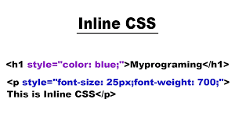
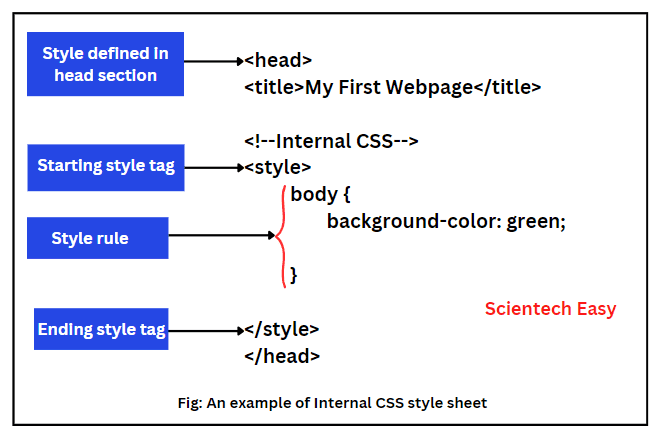
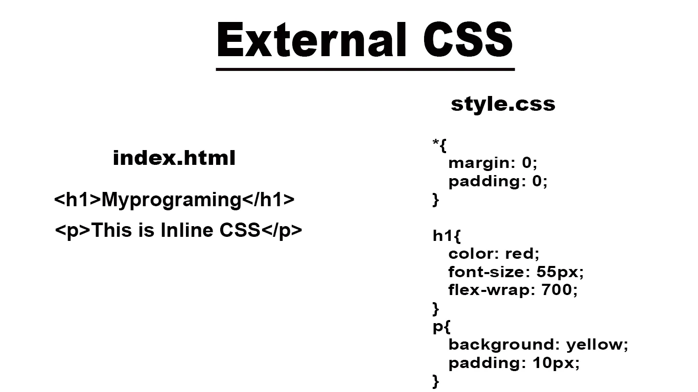
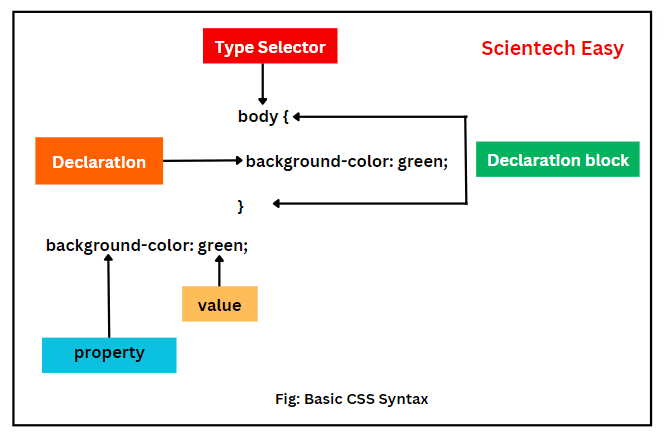
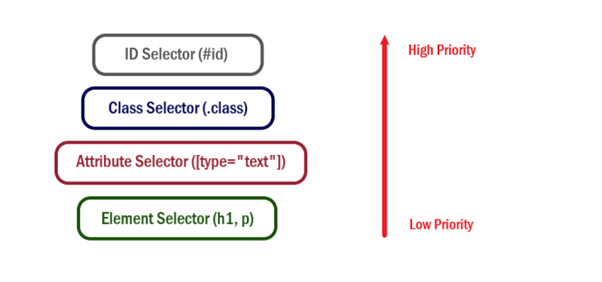
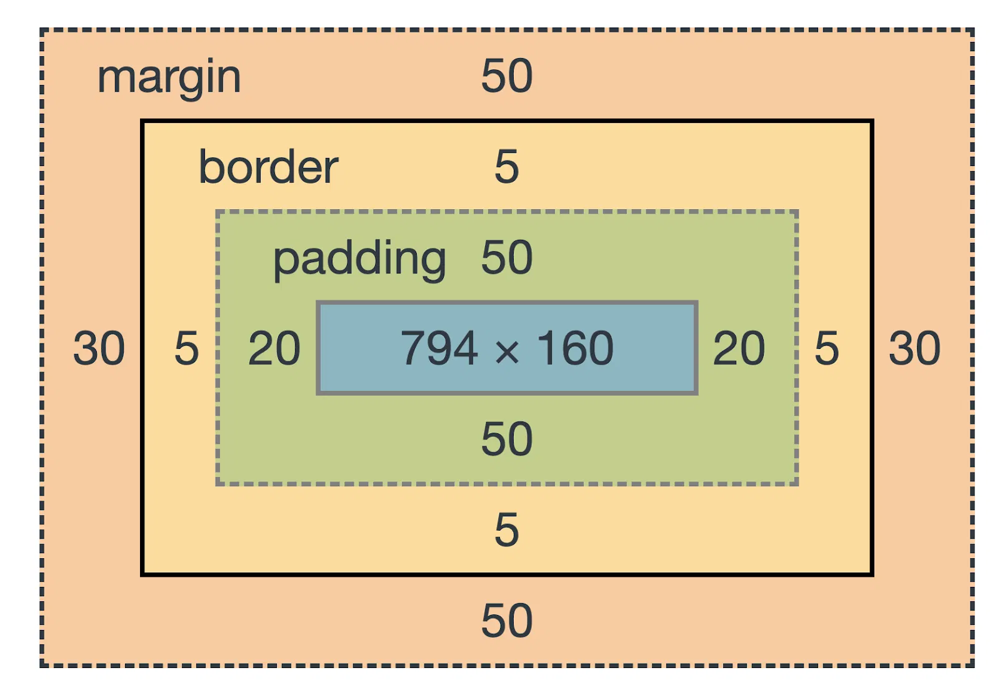
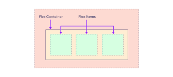
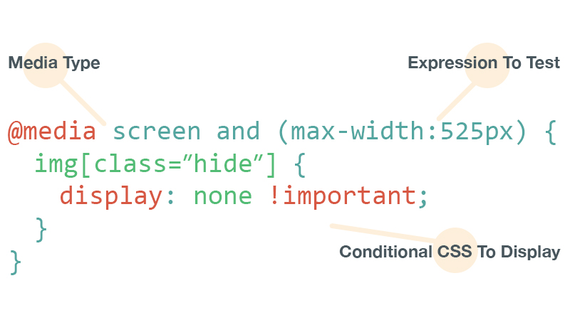

Create Beautiful Websites
CSS allows developers to transform plain content into visually appealing designs using colors, layouts, gradients, shadows, and animations.
CSS is the technology that transforms plain HTML pages into beautiful, responsive, and interactive websites. Learn the concepts that power modern web design, from colors and typography to advanced layouts and animations.
Start Learning
CSS stands for Cascading Style Sheets. It is the language used to style and design webpages. While HTML provides the structure and content of a website, CSS controls its appearance. CSS helps developers change colors, fonts, spacing, layouts, animations, and much more.
Think of HTML as the structure of a house. HTML creates the walls, windows, doors, and rooms. CSS acts as the interior designer that decides the colors, furniture arrangement, decorations, lighting, and overall appearance.
Without CSS, websites would look plain and difficult to use. Every modern website relies on CSS to create attractive layouts and improve user experience.
Today, CSS is one of the most important technologies for frontend web development. It works together with HTML and JavaScript to build powerful web applications.
CSS is much more than changing colors. It provides the tools required to create professional websites that are attractive, responsive, and easy to use.
CSS allows developers to transform plain content into visually appealing designs using colors, layouts, gradients, shadows, and animations.
Good styling improves readability, accessibility, and navigation, making websites easier to use.
CSS enables websites to adapt automatically to different screen sizes such as mobiles, tablets, and desktop computers.
CSS is one of the core technologies used by frontend developers around the world.
CSS can be applied to HTML in three different ways. Each method has its own advantages and use cases.

Inline CSS is written directly inside an HTML element using the style attribute.
It affects only the specific element where it is applied. Although useful for quick testing, it is not recommended for large projects because maintenance becomes difficult.

Internal CSS is written inside a style tag within the head section of an HTML document.
This approach is suitable for small websites or projects that consist of a single page.

External CSS is stored in a separate stylesheet and linked to HTML using the link tag.
This is the most recommended method because styles can be reused across multiple webpages and projects.

Selectors help CSS identify which HTML elements should receive specific styles. Without selectors, CSS would not know which elements to target.
Different types of selectors allow developers to apply styles with different levels of precision.
| Selector | Example | Description |
|---|---|---|
| Element | p | Selects all paragraph elements |
| Class | .card | Selects elements sharing a class |
| ID | #header | Selects one unique element |
| Universal | * | Selects all elements |
| Group | h1,h2,h3 | Selects multiple elements together |
Targets all elements of a specific type. Example: styling every paragraph in a document.
Useful for reusable styles across multiple elements.
Used when a style should be applied to a unique element.

Sometimes multiple CSS rules target the same element. In such cases, the browser uses specificity to determine which style should be applied.
Specificity acts like a ranking system. Selectors with higher priority override selectors with lower priority.
The word "Cascading" refers to the process of combining multiple CSS rules and determining which styles should ultimately appear on the webpage.
Pseudo classes and pseudo elements allow developers to style elements based on their state or specific parts.
Pseudo elements help style specific parts of content.
CSS properties define how elements should appear on a webpage. These are some of the most commonly used properties.

Every HTML element is treated as a box. Understanding the box model helps control spacing and layouts.
The actual text, image, or media.
Space between content and border.
The visible boundary around an element.
Space outside the element.
CSS provides different units for sizing elements, spacing, and typography.
Fixed measurement unit.
Relative to the parent element.
Relative to the parent's font size.
Relative to the root font size.
Viewport width.
Viewport height.

Flexbox is a one-dimensional layout system that helps arrange items efficiently in rows or columns.
It is commonly used for navigation bars, cards, galleries, and responsive layouts.
Center and align content easily.
Create equal spacing between items.
Items can wrap automatically.
Common Flexbox properties include justify-content, align-items, flex-wrap, and gap.

CSS Grid is a two-dimensional layout system that works with rows and columns simultaneously.
It is ideal for dashboards, image galleries, portfolios, and modern website layouts.
Grid provides greater control over complex layouts compared to traditional methods.
The position property controls how an element is placed on a webpage. It is commonly used for navigation bars, badges, floating buttons, popups, and many other interface elements.
The default position value. Elements follow the normal document flow and cannot be moved using top, left, right, or bottom.
Moves an element relative to its original position while still keeping its original space reserved.
Removes an element from the normal flow and positions it relative to its nearest positioned parent.
Stays attached to the browser window even while scrolling. Commonly used for chat buttons.
Behaves like relative positioning until a specific scroll point is reached, then sticks in place.
| Position | Normal Flow | Common Use |
|---|---|---|
| Static | Yes | Default Layout |
| Relative | Yes | Minor Adjustments |
| Absolute | No | Badges & Labels |
| Fixed | No | Floating Buttons |
| Sticky | Partially | Navigation Bars |
Sometimes content becomes larger than its container. The overflow property controls what happens in such situations.
Typography is the art of presenting text in a readable and visually appealing way. Good typography improves user experience and makes content easier to understand.
Great design begins with clear and readable content.
Defines the typeface used for text.
Controls the size of text.
Controls text thickness.
Improves readability between lines.
CSS animations and transitions help create interactive user experiences without JavaScript.
Smoothly change property values when a user interacts with an element.
Create advanced movement and effects using keyframes.
Examples include hover effects, loading indicators, fading content, sliding menus, and bouncing elements.

Users access websites from many different devices, including desktops, laptops, tablets, and smartphones.
Media queries allow CSS to apply different styles based on screen size, orientation, or device characteristics.
Responsive design ensures that a website remains usable and visually appealing across all screen sizes.
Design for smaller screens first and then enhance the layout for larger devices.
Flexbox and Grid work together with media queries to create adaptive designs.
CSS is one of the most important technologies in web development. It helps developers create attractive, responsive, and user-friendly websites.
In this guide, we explored CSS fundamentals including selectors, specificity, pseudo classes, box model, units, Flexbox, Grid, positioning, overflow, typography, animations, and media queries.
Mastering these concepts provides a strong foundation for building modern websites and web applications.